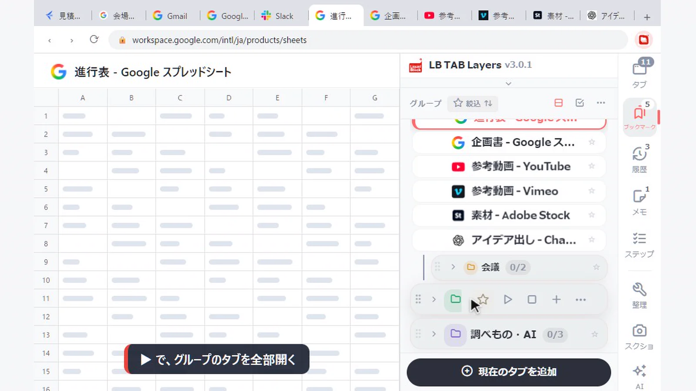
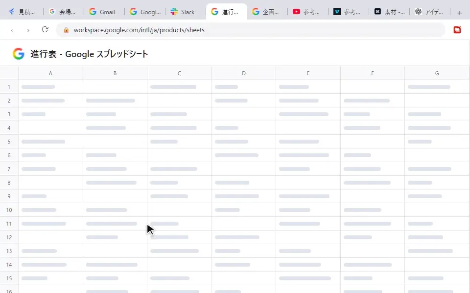
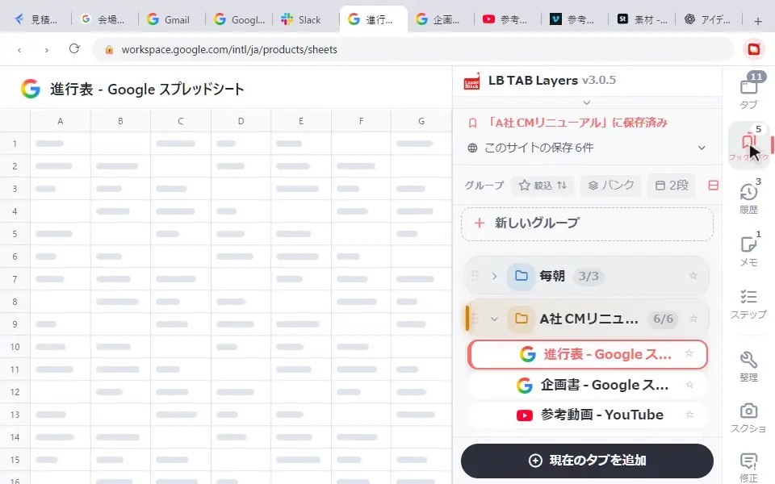
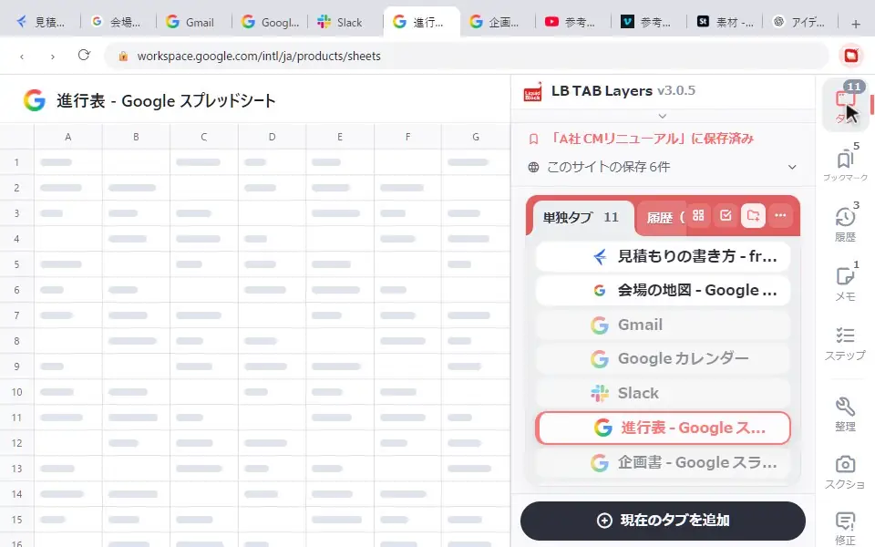
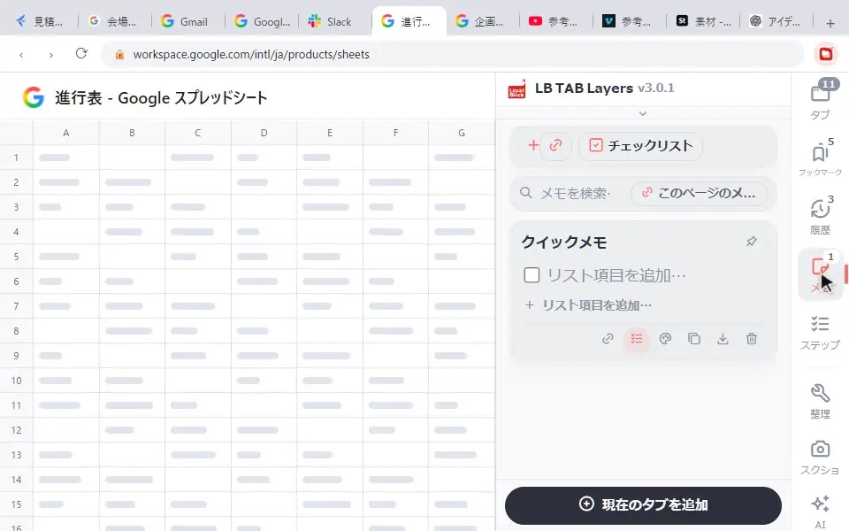
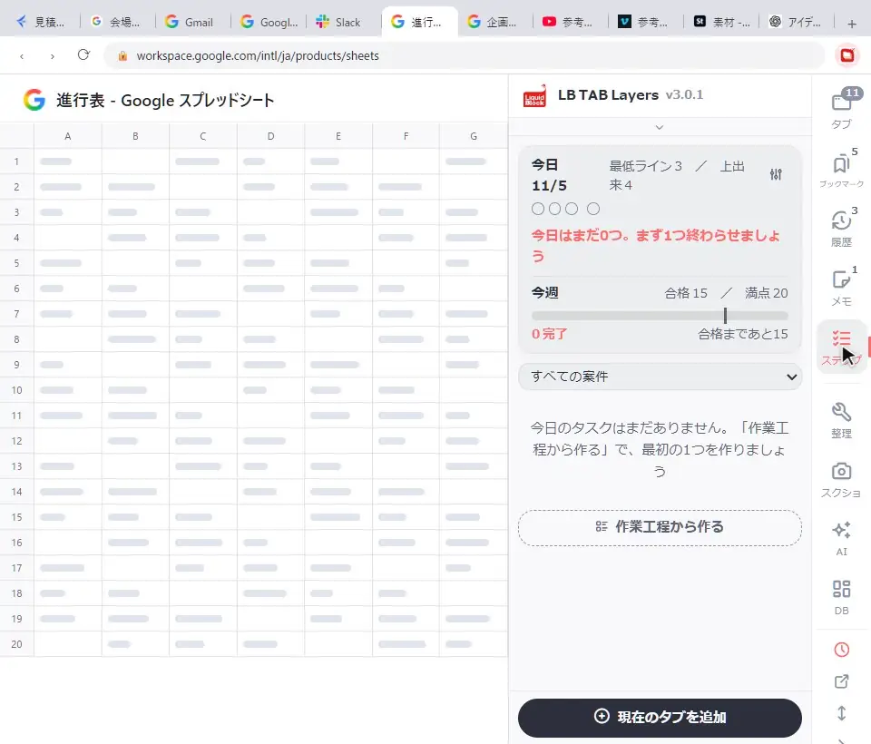
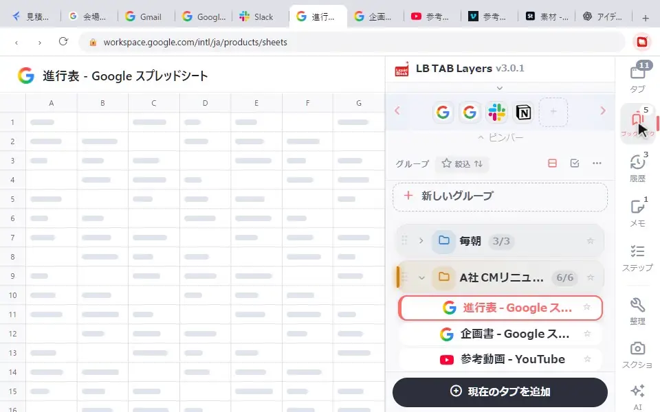

LB TAB Layers の操作は、パネルの中で押すと、ブラウザのタブがそのとおりに開いたり閉じたりすると覚えると早いです。このページでは、よく使う10の操作を、ブラウザの画面とサイドパネルを一緒に録った動く画像で見られます。最初の基本は クイックチュートリアル にまとめています。
文字で読むより、動いているところを見たほうが早い操作をまとめました。どの画像も、左がブラウザの画面、右が LB TAB Layers のサイドパネルです。パネルで押したことが、ブラウザのタブにどう出るかを見てください。
💡 まだ入れたばかりなら、先に クイックチュートリアル（5分）がおすすめです。このページは、その次に覚えると便利な操作です。
1. パネルを開く・閉じる
キーボードの Alt+T（Macは Option+T）で、いつでも開けます。ツールバーの LB TAB Layers のアイコンでも、開いたり閉じたりできます。

2. 保存したタブを開く
グループを押すと、中に保存したタブが並びます。タブの名前を押すと、そのページが開きます。すでに開いているタブは、押すとそのタブに切り替わるので、同じページが何枚も開くことはありません。
3. ▶ で開くと、Chrome のタブグループになる
グループにマウスを乗せて ▶ を押すと、中のタブが全部開きます。開いたタブは、グループと同じ名前・同じ色の Chrome のタブグループにまとまるので、タブバーでもどの仕事のタブか一目でわかります。作業が終わったら ■ で、そのタブグループごと閉じます。閉じても、保存はそのまま残ります。

タブグループにまとめたくないときは、設定でオフにできます。
4. 右クリックで、タブをグループに保存する
「タブ」の画面で、保存したいタブを右クリックして「フォルダに保存」を選び、保存先のグループを押します。今見ているタブでなくても、そのまま保存できます。

5. グループの中にグループを作る
案件が大きくなったら、グループの中をもう1段分けられます。グループにマウスを乗せて「…」→「サブグループを追加」。「A社」の中に「会議」「素材」のように分けると、探しやすくなります（無料版は2階層まで）。

6. グループの名前・色を変える
「…」→「編集（名前・アイコン・色）」で、名前と色、アイコンを変えられます。色は、▶ で開いたときの Chrome のタブグループの色にもなります。

7. 閉じたタブを、今日の履歴から開き直す
保存しないで閉じてしまったタブも、あわてなくて大丈夫です。縦の列の「履歴」に、今日見たページが新しい順に並んでいます。押すと、もう一度開きます。

8. 見ているページにひもづけたメモ
「メモ」の画面で、リンクのボタン（このページのメモを作る）を押すと、今見ているページ専用のメモができます。次に同じページを開いたとき、そのメモがすぐ出てきます。打ち合わせで確認したいことや、作業の途中経過を残すのに便利です。

9. ステップタスク：作業を工程に分けて進める
「ステップ」の画面の「作業工程から作る」で、手順のひな形を選んで「作る」を押すと、工程のチェックリストができます。工程にチェックを入れて進め、全部の工程が終わってはじめて1つ完了と数えます。今日・今週の進み具合も見えます。

10. ピンバー：毎日使うサイトを1クリックで
パネルの上のピンバーに並んだアイコンを押すと、そのサイトが開きます。タブやブックマークを右クリックして「ピンバーに追加」で増やせます（12個まで）。いらなくなったピンは、右クリックで外せます。

🔒 保存したタブは、Chrome のブックマークに保存されます。グループはブックマークのフォルダになるので、拡張を消しても残ります。メモやステップなど拡張の中にあるデータは、設定から書き出しておくと安心です。
よくある質問
Q. ▶ で開いたタブが、Chrome のタブグループにならないようにできますか？
できます。設定で、グループをタブグループとして開く設定をオフにしてください。
Q. サブグループはいくつまで作れますか？
無料版は2階層まで作れます。PRO では制限がありません。インストールから90日間は PRO の機能をすべて使えます。
Q. 今日の履歴とステップタスクは無料で使えますか？
どちらも PRO の機能ですが、インストールから90日間は無料で使えます。
Q. ピンバーにはいくつ置けますか？
12個まで置けます。右クリックで外せます。
▶ 実際の操作を動画で見る
サイドバーで、ブックマークとタブをいっしょに管理する様子です。
パネルで押せば、ブラウザがそのとおりに動く。
仕事ごとにタブをまとめて、▶ で開いて ■ で閉じる。アカウント登録なし · 保存先は Chrome のブックマーク · 90日すべての機能を無料で
Chrome に無料で追加 →